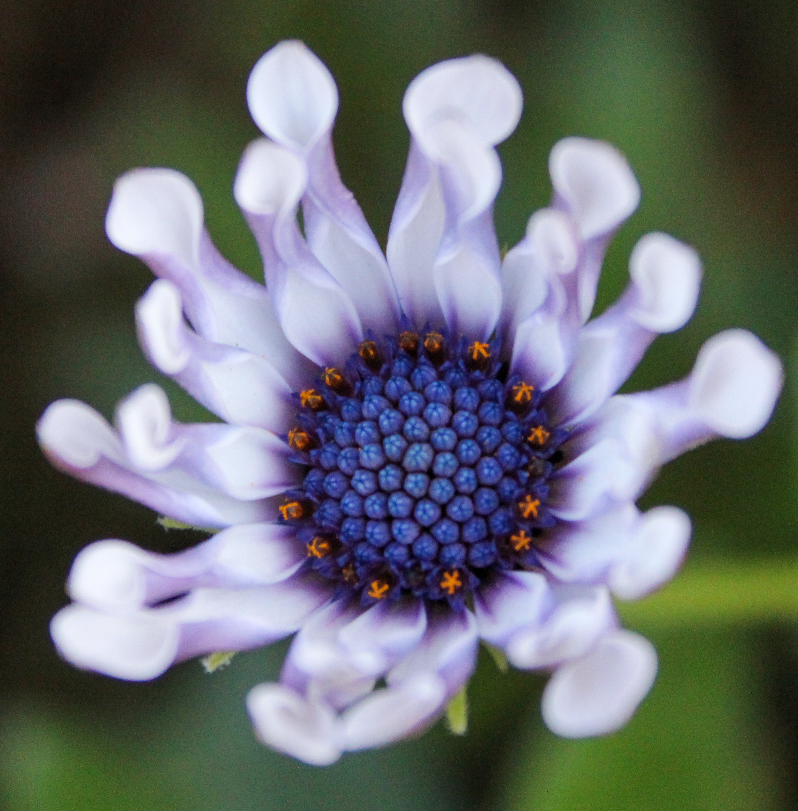
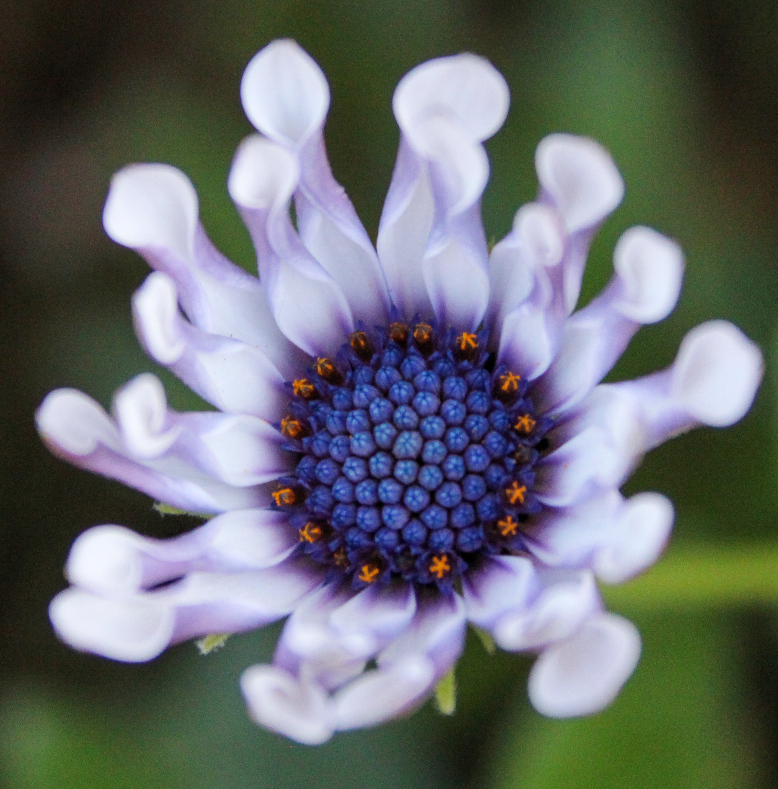

Welcome to my corner of the web:)
Feel free to click around to learn more about me
I love flowers and photography please find some of my favorite pictures I have taken below


 



Click here to see my design insporation